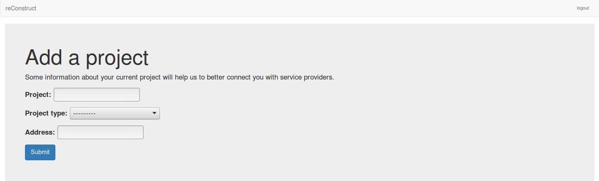
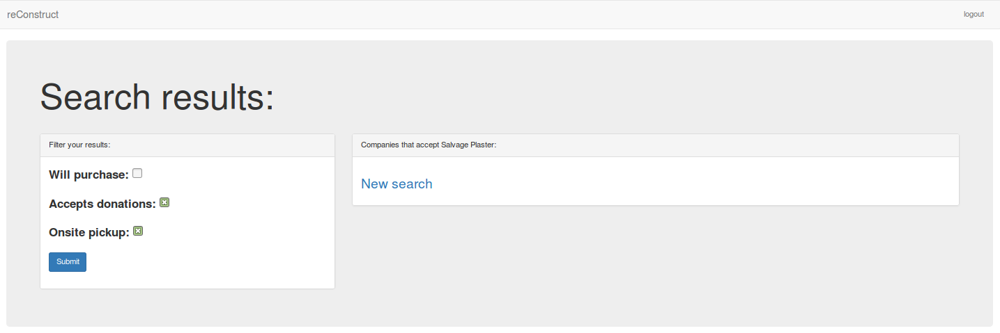

Signing up and Logging in to reConstruct¶
Creating A User Account¶
reConstruct main page:¶

Click “Sign Up” to create a new user account.
Here, the user fills in the user name, email, and password fields with the appropriate information.

Once the user has been created, the profile details are entered.

The user can now add projects.

Details of the project are added here.
Define the waste being generated to find local companies to handle it.
A local company dealing in plaster appears.

Search results can be filtered through checking the lefthand boxes. There appears to be no local company accepting plaster that both performs onsite pickups and accepts donations.

After projects have been addded, they will appear
Logging In To An Existing Account¶
Existing users log in through the above screen.
After logging in, the user should see their profile page.